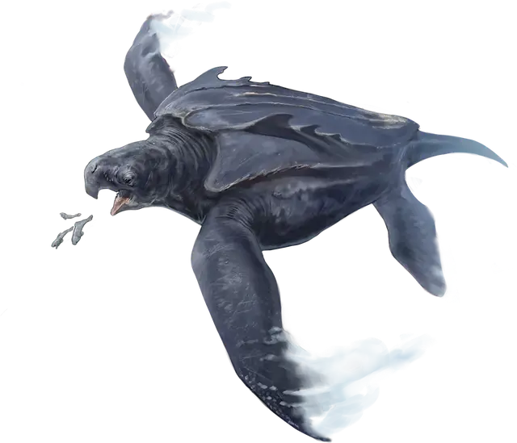

Архелон
Archelon
Большой Зверь, без мировоззрения

Класс Доспеха 14 (природный доспех)
Хиты 26 (4к8 + 8)
Скорость 10 футов, плавая 40 футов
| мод | спас | ||
|---|---|---|---|
| СИЛ | 16 | +3 | +3 |
| ЛОВ | 13 | +1 | +1 |
| ТЕЛ | 14 | +2 | +2 |
| мод | спас | ||
|---|---|---|---|
| ИНТ | 2 | −4 | −4 |
| МДР | 12 | +1 | +1 |
| ХАР | 5 | −3 | −3 |
Навыки Восприятие +3
Чувства пассивное Восприятие 13
Опасность 1 (200 опыта)
Бонус мастерства +2
Особенности
В переводе приключения «Гробница Аннигиляции» команда переводчиков Dungeons_ru добавила дополнительные блоки статистики динозавров из модуля "Beasts of the Jungle Rot".
— Господин Финик.
Задержка дыхания. Архелон может задержать дыхание на 6 часов.
Действия
Укус. . Рукопашная атака оружием: +5 к попаданию, досягаемость 5 фт., одна цель. Попадание: 12 (2к8 + 3) колющего урона.
Описание
Эта огромная морская черепаха весит более 4500 фунтов. Её мягкий панцирь позволяет ей плавать с высокой скоростью и преследовать добычу на мелководье. Эти черепахи предпочитают питаться медузами, но употребят в пищу любое, достаточно медленное мясо, которое встретят на своей территории.